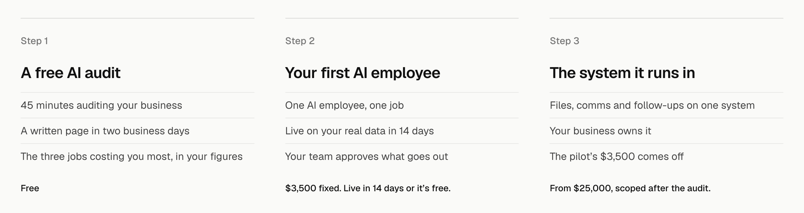
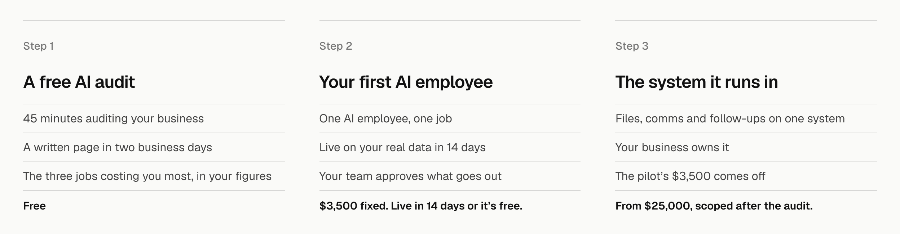
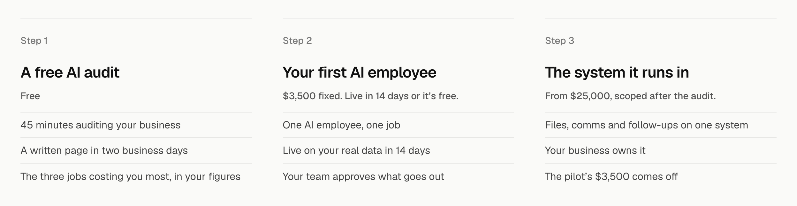
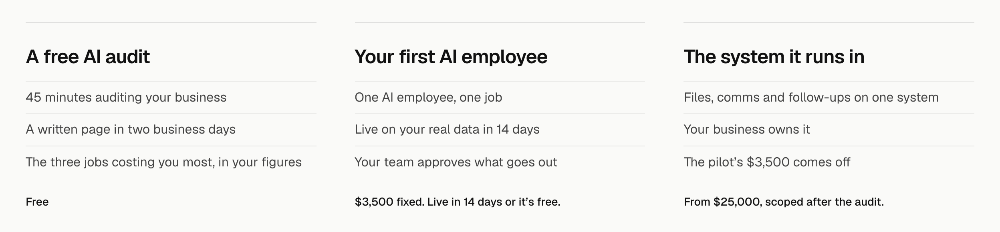

How it works, detail 3: the step label and the price line
The three steps close up, drawn on the real homepage at 1440 wide. Only the “Step” label and the price line change.
Today“Step 1” in grey above each title; the price in ink under the facts. For comparison, not an option.

1. Price as the closing lineThe price becomes the last ruled line of each step, a touch bolder, so every column reads as one list: title, three facts, price. The smallest change. Recommended.

2. Price under the titleThe price moves up to sit under each step’s title in grey, so the cost is read with the name before the facts. The audit’s “Free” then sits right under “A free AI audit”.

3. No step label“Step 1” to “Step 3” go; the order is already left to right and the titles say what each is. Less above each title, but on a phone, where the steps stack, nothing numbers them.
